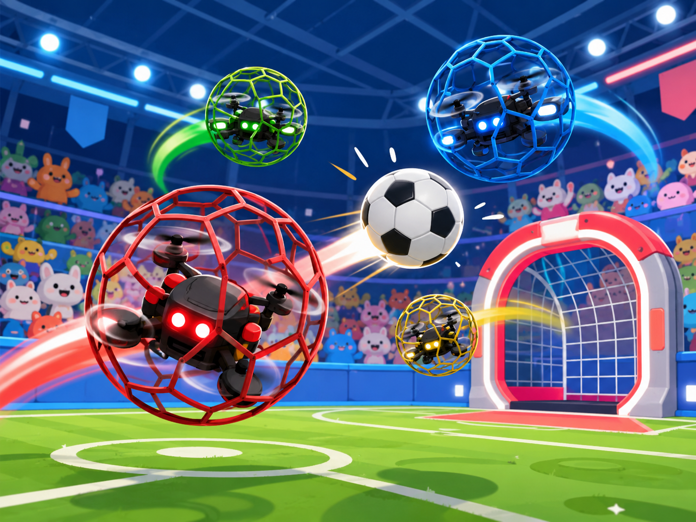

秀傳夏日無人機嘉年華活動流程
08:00 - 08:30
報到
08:30 - 08:40
長官致詞
08:40 - 09:25
專題演講 (1) 無人機的發展與實務應用
航見科技公司 | 張東琳 總經理
09:25 - 10:10
專題演講 (2) 新竹地區偏鄉山區無人機運送系統
臺大醫院急診醫學部 | 張家銘 醫師
10:10 - 10:30
☕ 茶敘
10:30 - 11:15
專題演講 (3) 偏鄉照護零距離
花蓮慈濟醫院醫事室 | 張菁育 主任
11:15 - 12:00
專題演講 (4) 彰秀醫療無人機前瞻系統計畫
秀傳紀念醫院急診醫學部 | 陳穎信 醫師
12:00 - 13:15
🍱 午餐
13:15 - 13:30
報到
13:30 - 14:00
無人機情境演練說明與分組
14:00 - 16:40
✈️ 實境模擬與體驗
• 無人機情境模擬闖關 (A廳)
• 無人機足球體驗 (B廳)
• 觀摩飛行演練 (延平公園等)
16:40 - 17:00
大會總結 / 嘉賓分享
17:00 -
賦歸
報到掃描
歡迎您參加無人機夏日嘉年華

目前時間：
00:00:00
即時報到動態
目前報到人數：計算中...
🔄 連線至資料庫中...